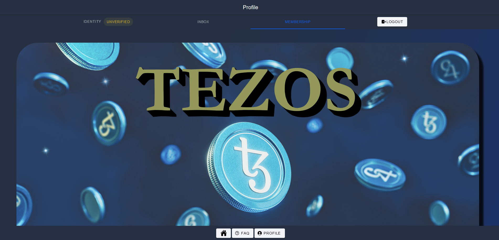

Introduction
The problem
- Lot of decentralized groups : the community is scattered and very diverse from core developers to artist and gamers
- No single entrypoint : There are plenty of tools, social networks and user registries
- No effective information broadcast to all members : lot of scams, spams, bots or trollers
- No global company/member directory : each application reimplements its own user registry bringing either duplication or separated worlds
Tezos pseudonym social graph

We are not going to tackle the problem of the unique identity like BrightID, instead we concentrate our effort on the pseudonymity already provided by Tezos addresses combined with grouping feature and restricted social media linking
- Identity :
- strictly pseudonymous Tezos addresses
- (optional) restricted display name, alias and picture from different social networks available for people from same organization
- Organizations : a way to regroup people inside a cluster
- Internal alerting system : a non gas-free way to send important message to other clusters and get alerted on real time
Final goal
This application :
- should not be seen as a final product but as a base layer for other application to integrate with. Example : providing a list of player for a mobile game where it is hard to type and remember a tz1 address
- does not require high presence. It has to be seen as a configuration tool like a contact list, a LDAP or other user registries running in background
Links
- TEZOS COMMUNITY DAPP (Web based)
- TEZOS COMMUNITY DAPP (Android) Soon
- TEZOS COMMUNITY DAPP (iOS) Soon
User Guide
Login
Login with your preferred wallet, configure your social account link, claim your NFT membership card
Create an organization
Create an organization, be the administrator and start to manage it
Manage an organization
Manage an organization, approve/refuse members and add more administrators
Join an organization
Join an existing organization
Write to an organization
Write to an organization and receive replies and notifications
Login
Open/Connect to Tezos community
Your identity is your wallet account
Click on Connect your wallet and select your preferred wallet and account


Link
You can choose to link your profile with one of the listed social account. If you do so, other people from same group are able to see your real name and picture. It will improve human readable identities for others third party applications, messaging, etc ...
Note : if you want to stay totally pseudonymous, don't do this step
Click on bottom button Profile and select of the social account you have
Note : if your social account does not exist on the list , please send an email to benjamin.fuentes@marigold.dev
Once you confirm all intermediate popups, your Tezos address will now appear with the social account information

You can unlink social account at any time clicking on button UNLINK SOCIAL ACCOUNT
Claim NFT membership card
On MEMBERSHIP tab, you can claim your Tezos NFT membership card for free
It can be used later for loyalty programs, access token, etc ...
Click on CLAIM NFT button

Logout
On top right corner of Profile menu, click on LOGOUT button to disconnect your wallet
Create an organization
On Home/Organizations menu, click on CREATE AN ORGANIZATION and fill the form then click on DONE button
Confirm the transaction with your wallet, and wait few seconds for refresh
- name : The name of your organization
- business : The goal or business of your org
- IPFS NFT url (optional): the link to your org NFT
- Logo url (optional): the picture / logo
- Website (optional): the link to your website
- Funding address (optional): the address to your DAO or a user wallet address for sending funds
- AutoRegistration (optional): if you authorize or not member to join automatically without manual approval. Default is false

If you click on it, it is selected and you have access to different tabs
Note : your organization is still on pending mode until a super admin will look at it and do a short KYC with you. When this process is accepted, you will be able to accept new members, etc ... Note : You will have to behave as a good father/mother and not have an unappropriated behavior. If members reports so, your organization might be frozen during a certain time. Apart of this, super admins have no control on what you do on your organization.

Update
As administrator of your org, you can update all the fields and click UPDATE ORGANIZATION
Messages
You can vizualize here all alerts/messages sent to your organization
For more information on how to send message, got to this chapter
Administration
The last tab is where you manage your organization, go to this chapter to know more about it
Manage an organization
If you are administrator, on your Organization page, the last tab lets you manage your org
Administrators
Add administrator
Enter the address of someone you want to invite as administrator and click on ADD ADMIN

Once confirmed he/she will appear on both admin and member

Delete admin
Click on the trash to delete an admin

Now you are the only admin.
Note : as there is at least 1 member on your organization (that is not you), you can pass the admin flag to another member or either decide to delete your organization
Members
Users can be added only if :
- they send a request to join and are accepted (with AutoRegistration to false)
- they send a request to join (with AutoRegistration to true)
- they are no more admins
You can only remove a user from organization, no other action are possible.
To remove a user
Click on the trash icon


Member requests
To have member requests, you need someone to send a join request, see this chapter for more details
When you have user, you can approve/decline in batch
For each user, approve or remove it from selection clicking on each checkbox. When you are done, click on APPLY ALL button to confirm all
If you accepted users, they will be part of member list now
Otherwise, they are discarded
Join an organization
Any user can request to join an organization
On home/Organization menu, click on JOIN AN ORGANIZATION
Fill the reason and select the organization you want to join, then click on DONE
Your request is sent to the administrator of this organization
To see what an administrator can do with your request , click here
Write to an organization
Any user can write to an organization, being part of it or not but ... he/she will have to pay gas fees. The reason is that we want to avoid spammers and we want to make these alerts/messages appearing as important information
Write
You can either click on the button WRITE TO ORGANIZATION on Home/Organization page or on the MESSAGES tab of your organization

Write your message (respecting ASCII characters) and click on SEND button

Reply
If someone send a message and is not part of the organization, he/she cannot see the answers. To tackle this issue, any user can decide to reply to a message.
Click on REPLY on a specific message and add your text there, then click on REPLY button

Watch replies in thread
If you are part of the organization, you can vizualize all thread and replies

Watch replies on inbox
If you are not part of the organization, you can vizualize replies to your messages on your Profile > Inbox tab